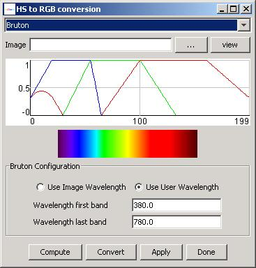
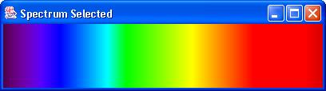

The class HyperSpectralToRGB provides a tool for display and data conversion of hyperspectral images to red-green-blue (RGB) image.
Description: Hyperspectral images contain too many bands to display at the same time as regular monocromatic or color images. For instance, to be able to display a hyperspectral image covering visible spectral range, a user will often have to select three bands that correspond approximately to the red, green and blue wavelengths. Fortunately the wavelength information associated with each hyperspectral image band is known and a user could select the bands of choice for display.
This tool is designed to automatically convert a hyperspectral image to a RGB image by collapsing each of the hyperspectral bands to the RGB bands. This is done by using the algorithm developed by Dan Bruton ( http://www.physics.sfasu.edu/astro/color.html). The algorithm takes the wavelength, determines the percentage it contributes to the Red, Green and Blue color, and multiplies it with the intensity to create the RGB image. In the case of non-visible light (lower than 380 and more that 780nm) the percentage it adds to the RGB values is 0.
This dialog allows users either to choose the existing wavelenths that describe the hyperspectral image (if available) or to specify the wavelengths of the first and last bands and interpolating the wavelength for all the bands in between first and last bands. The dialog will enable both radio buttons "Use existing wavelengths" and "Specify wavelength range" if the loaded hyperspectral image contains information about band wavelengths. Otherwise the option of "Use existing wavelengths" is disabled. To see the selected spectrum range specified by fisrt and last band wavelengths, users can press the "Show Spectrum" button and view the spectrum range visualization (see below).
Once a user is satisfied with the spectrum range, pressing the "Apply" button will convert the current hyperspectral image to a RGB image.
Author: Rob Kooper.